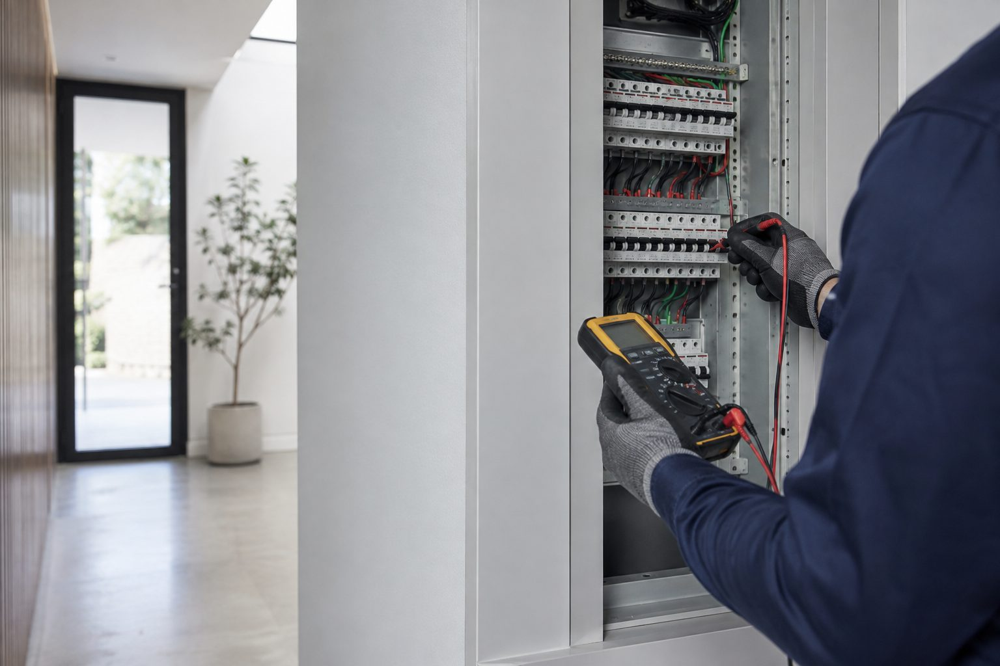

Perth property repair enquiries
Plumbing and electrical repairs in Perth
Clear help for property problems. Ellis Services Group is a direct place to start when a plumbing or electrical issue interrupts your Perth property.
Clear help for property problems. Ellis Services Group is a direct place to start when a plumbing or electrical issue interrupts your Perth property.
Leaks, slow drains and hot-water symptoms are easier to action when the location and observations are clear.
For electrical faults, report what you can observe from a safe position. Never dismantle equipment to diagnose a problem.
Property issues do not always arrive neatly labelled. Tell us what you have noticed, where the property is, and any access details that matter.
How to make an enquiry Plumbing
PlumbingShare the affected room, when it began and whether water is actively escaping.
Plumbing repair information →
ElectricalDescribe the symptom rather than testing or dismantling electrical equipment.
Electrical repair information →Bring together the property reference, issue, access arrangements and approval contact.
Property management support →Ellis Services Group receives enquiries for Perth and surrounding suburbs. Contact us with the property location to confirm whether the request can be accommodated.